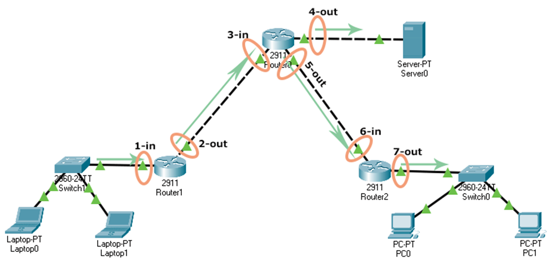

Overview
The ip access-list command is a global configuration mode command. To create a standard named
ACL, use the following syntax:
Router(config)# ip access-list standard ACL_name
After entering this command, the prompt changes to standard ACL configuration mode, where you can add permit/deny statements:
Router(config-std-nacl)# permit|deny source_IP_address [wildcard_mask]
An ACL does nothing until it is applied to an interface. To apply a standard ACL to an interface, enter interface configuration mode and use:
Router(config-if)# ip access-group ACL_name in|out
Network Topology
The lab uses the following topology. Router0 is the core router connected to Router1 (Students network), Router2 (Teachers network), and the Server.

| Network | Subnet | Hosts | Connected To |
|---|---|---|---|
| Students | 10.0.0.0/8 |
Laptop0 (.10), Laptop1 (.20) | Router1 → Router0 Gig0/2 |
| Teachers | 20.0.0.0/8 |
PC0 (.10), PC1 (.20) | Router2 → Router0 Gig0/1 |
| Server | 30.0.0.0/8 |
Server0 (.10) | Router0 Gig0/0 |
| Link R0–R1 | 192.168.1.0/30 |
R0 (.2), R1 (.1) | R0 Gig0/2 ↔ R1 Gig0/2 |
| Link R0–R2 | 192.168.1.4/30 |
R0 (.5), R2 (.6) | R0 Gig0/1 ↔ R2 Gig0/0 |
Objective
Create a Standard Named ACL called BlockStudents on Router0 that:
- Denies all traffic from the Students network (
10.0.0.0/8) - Permits all other traffic (Teachers, etc.)
- Is applied outbound on
GigabitEthernet 0/0(the interface facing the Server)
Traffic Flow Diagram
The diagram below shows where inbound (in) and outbound (out) ACL directions are applied across the network interfaces:

Task 1 – Creating a Standard Named ACL
Access the command prompt of Router0 and run the following commands to create and apply the
BlockStudents ACL.
Router> Router> enable Router# configure terminal Enter configuration commands, one per line. End with CNTL/Z. Router(config)# ip access-list standard BlockStudents Router(config-std-nacl)# deny 10.0.0.0 0.255.255.255 Router(config-std-nacl)# permit any Router(config-std-nacl)# exit Router(config)# interface gigabitethernet 0/0 Router(config-if)# ip access-group BlockStudents out Router(config-if)# exit Router(config)# exit Router#
Standard ACLs should be placed as close to the destination as possible. By applying the ACL
out on Router0's interface facing the Server (Gig0/0), we block Student traffic just
before it reaches the Server while allowing all other outbound traffic through the same interface.
Task 2 – Verification
Verify the ACL was created correctly and is being applied to the interface.
Router# show ip access-lists Standard IP access list BlockStudents 10 deny 10.0.0.0, wildcard bits 0.255.255.255 20 permit any Router# show ip interface gigabitethernet 0/0 GigabitEthernet0/0 is up, line protocol is up Outgoing access list is BlockStudents Inbound access list is not set
Task 3 – Deleting a Standard ACL
To delete a standard named ACL, use the following command in global configuration mode.
Router(config)# no ip access-list standard BlockStudents